本作业以一段手持拍摄的视频为唯一数据源，对同一真实静态场景（寝室）走完 抽帧位姿估计四种表示训练渲染评测 的完整流程，并在统一的 held-out 测试集与同一组 COLMAP 位姿上比较 COLMAP 点云、3D Gaussian Splatting（3DGS）、NeRF 与 NeuS。核心发现有三：其一，3DGS 在新视角合成上始终最优，fps4 达到 27.70 dB PSNR、0.868 SSIM；其二，抽帧率对质量的影响明显非单调，fps8（1107 训练图）反而显著退化，说明密集抽帧放大了快速转动区的模糊与匹配漂移；其三，NeuS 训练与表面提取成功，在 fps2 取得 RGB 指标（PSNR 13.30 dB），但在本作业统一的 40 000 步预算下其质量与效率仍明显落后于 3DGS。
原始数据使用 iPhone 11 广角镜头 手持环绕拍摄的寝室视频 dormitory.MOV，并且为了充分采样，拍摄过程中采用了不同的高度。使用 ffmpeg 按固定 fps 等时间间隔抽帧，得到不同密度的图像序列。寝室属于典型的小型室内场景，包含床、书桌、衣柜门、镜子与窗户；其中衣柜门区域带有大面积镜面与高反光，窗户为透光玻璃——这两类区域会在后文反复出现，是解释各方法失败的关键。
三组正式运行的帧数、训练/测试划分与 run 目录统一整理在附录（见 附录 9.1）。三组共享同一套预处理与超参（详见 §4），仅抽帧率不同；表中的帧数为去模糊过滤后的结果。
sequential_matcher + mapper，单目 PINHOLE 模型，全部帧共享同一相机share_poses=truesparse/0，3DGS / NeRF / NeuS 复用同一份位姿train.txt 训练、在同一 test.txt 上评测按拉普拉斯方差给出每帧 blur_score，丢弃 blur_threshold=10 以下的模糊帧。
crop_ratio=0.9，保留中心 90%，缓解手机镜头的边缘畸变。
训练超参与评测口径见 §4。
以下为共享 SfM 前端与各神经方法的数据处理耗时（数据取自 timings.json）：COLMAP 特征提取 10.4 s、序列匹配 79.2 s、mapper 942.5 s；nerfstudio ns-process-data 为 NeRF 准备 transforms.json 耗时 5.8 s；NeuS 的 meta_data.json 生成耗时 0.7 s。SfM 前端为所有神经方法共用，仅执行一次。
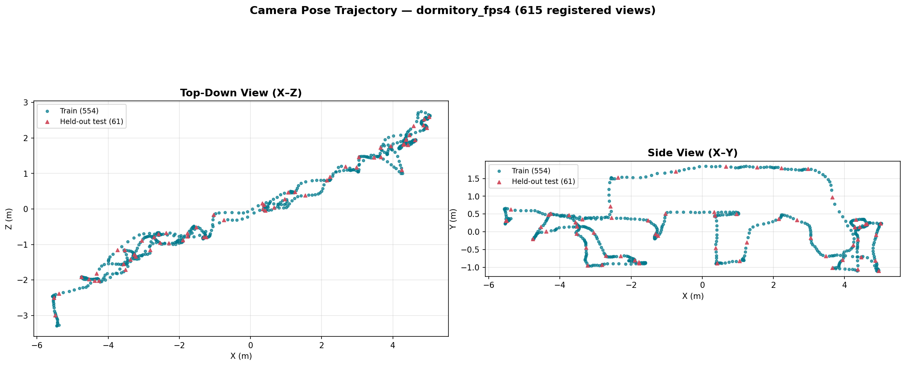
所调用的工具与库清单见 附录 9.2。依赖通过 uv 在 pyproject.toml 的 lab3 group 声明（CPU / CUDA 12.4 两套 extra）；安装与版本见 docs/lab3/README.md。
四种方法都通过同一 CLI（lab3 --methods ...）触发，各自调用上表中的工具，产出标准化的中间结果：
feature_extractorsequential_matchermapperlab3 --view-run <run_dir> --methods sfm --no-nerfstudio-viewersparse/0 与稀疏点云reconstruction/sfm.pytrain.py 训练render.py 渲染测试集lab3 --view-run <run_dir> --methods 3dgs --no-nerfstudio-viewerpoint_cloud/iteration_N/point_cloud.ply、测试集渲染reconstruction/dgs.pyns-process-datans-train nerfactons-render（COLMAP→transforms.json）lab3 --view-run <run_dir> --methods nerfreconstruction/nerf.pymeta_data.json（COLMAP→SDFStudio）ns-train neus-factomarching cubes 导出 meshlab3 --view-run <run_dir> --methods neussdf_mesh.ply、checkpoint；held-out RGB 渲染在 fps2 成功、fps4/fps8 未运行reconstruction/neus.py一次完整调用按下面的阶段顺序执行；其中 share_poses=true 让 SfM 用全量图估计位姿后，把同一份 sparse/0 喂给三种神经表示，从而把"位姿估计"与"表示学习"两个变量解耦。
src/lab3/ 采用四层结构，自上而下为入口、编排、方法适配、共享后处理；方法适配层实现统一接口，新增表示无需改动编排与评测：
共享后处理层保证四种方法在同一份 held-out 集、同一套指标实现（lab3.metrics）与同一分辨率下被评测，是公平对比的基础。
常用命令如下（完整参数见 docs/lab3/README.md）：
# 命令链自检（不实际运行）
uv run lab3 \
--config configs/lab3/default.json --methods sfm --dry-run
# 正式全流程（寝室，fps4，四种方法）
uv run lab3 \
--config configs/lab3/default.json --scene-name dormitory_fps4 --fps 4 \
--methods sfm nerf neus 3dgs --dgs-repo ./gaussian-splatting
# 仅重跑某次运行的评测 / 后处理（不重训）
uv run lab3 \
--run-dir outputs/lab3/20260620_200014_dormitory_fps4
# 交互查看已有结果（按方法自动进入对应 viewer）
uv run lab3 \
--view-run outputs/lab3/20260620_200014_dormitory_fps4配置入口为 configs/lab3/ 下的 JSON（default.json 主配置、extra.json 额外实验、boya_close.json/boya_far.json 博雅场景）。
scripts/lab3/）scripts/lab3/ 下的辅助脚本按用途分组如下：
run_lab3_fps_sweep.sh：按 fps / 场景批量跑全流程。
render_neus_heldout.py：渲染 NeuS 的 held-out RGB/法向/深度。
build_report_assets.py：从既有 run 生成正文所需的 GT / 渲染 / 误差图与点云。
build_sibr_viewer.sh 编译 3DGS SIBR 实时查看器；inspect_blur_scores.sh 检查 blur_score 分布以选去模糊阈值。
所有训练与评测均在同一台 Ubuntu 24.04 机器上完成（i7-14700K、32 GB RAM、RTX 4070 Ti SUPER 16 GB）。系统工具 colmap（CUDA）与 ffmpeg 在 PATH 中；神经方法依赖 tiny-cuda-nn、diff-gaussian-rasterization 等本地编译扩展（见 docs/lab3/README.md）。
iterations=40000，分辨率 1600max_num_iterations=40000max_num_iterations=40001，mesh_resolution=512，export_mesh=trueeval_size=[900,1600]test_ratio=0.1，share_poses=true3DGS、NeRF 均在规范 held-out 集 prepared/test.txt 上用自实现 lab3.metrics（统一 PSNR/SSIM/LPIPS）评测，口径在 fps2/4/8 间一致。NeuS 在 fps4/fps8 未取得 held-out RGB 指标，仅在 fps2 取得结果。
为避免 16 GB 显存爆掉，训练/评测分辨率统一限制在 900×1600；3DGS 用 --dgs-camera-cache-size 限制相机缓存占显存；NeuS 通过 train-num-rays-per-batch、train-num-images-to-sample-from、train-num-times-to-repeat-images 控制每批光线数与缓存图像数。实测峰值显存（fps4）：NeRF 13.7 GB、3DGS 8.8 GB、NeuS 7.1 GB，均在 16 GB 以内。
所有方法的 render_fps 由渲染 held-out 视图的总耗时反算，包含磁盘 I/O，因此数值偏低（3DGS 约 0.17）并不代表其真实推理能力。
3DGS 与 NeRF 在正式运行 fps 2/4/8 下的完整 held-out 指标表见 附录 9.3，正文保留趋势图。NeRF 呈现与 3DGS 相同的非单调趋势；NeuS 仅在 fps2 取得 RGB 指标（见 §5.6），无法参与跨 fps 比较。
”帧越多越差”的现象主要由数据采集质量决定。这段视频在环绕镜面衣柜门时出现了较快的横向转动，导致部分画面存在明显的运动模糊。密集抽帧到 fps8 时，这些模糊片段会被切分成大量内容高度相似、但位置又存在轻微错位的连续帧。虽然相邻帧之间的视角重叠很高，但模糊和亚像素级错位会干扰 COLMAP 的特征匹配与三角化过程，使转动区域的相机位姿发生漂移。随后，这种位姿误差会在 3DGS 的 densification 过程中，以及 NeRF 的体场优化过程中被进一步放大，最终导致重建质量下降。相比之下，fps2 或 fps4 的稀疏采样会自然跳过一部分运动模糊严重的帧，只保留运动相对平缓、图像更清晰的视角，因此相机位姿更稳定，整体重建效果也更好。
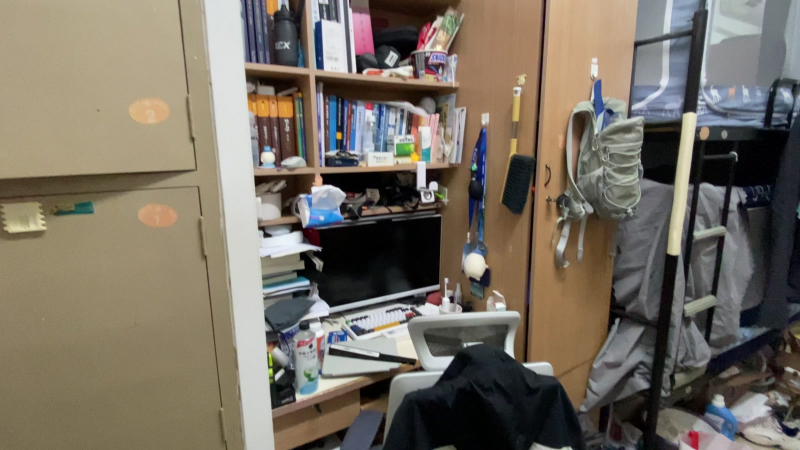
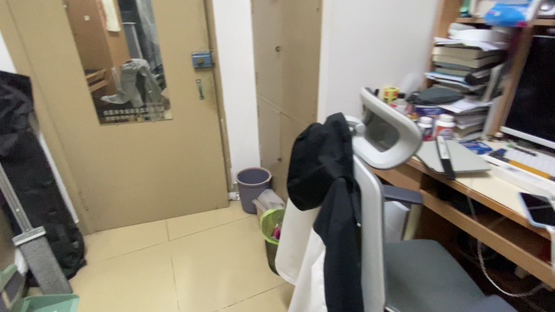
前段（000030）
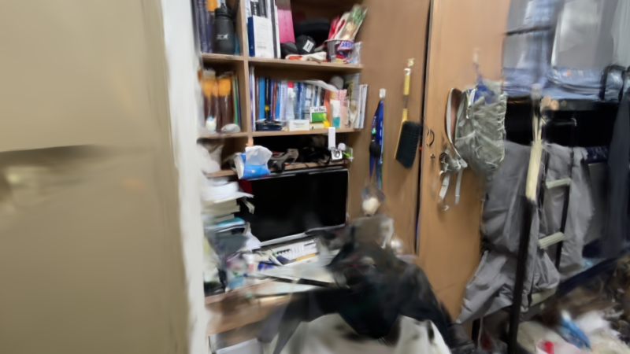
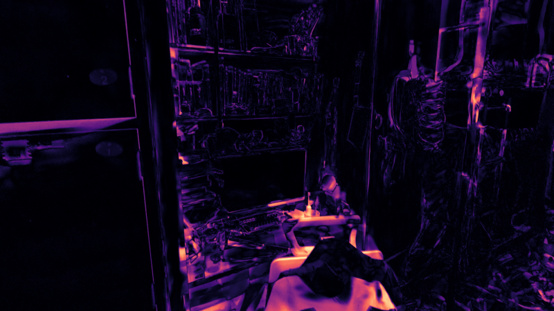
后段（001210）
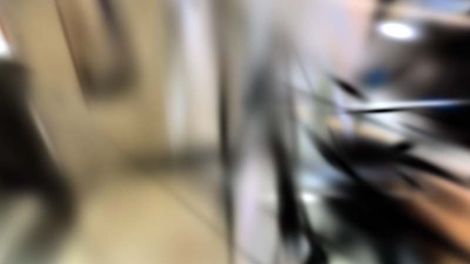
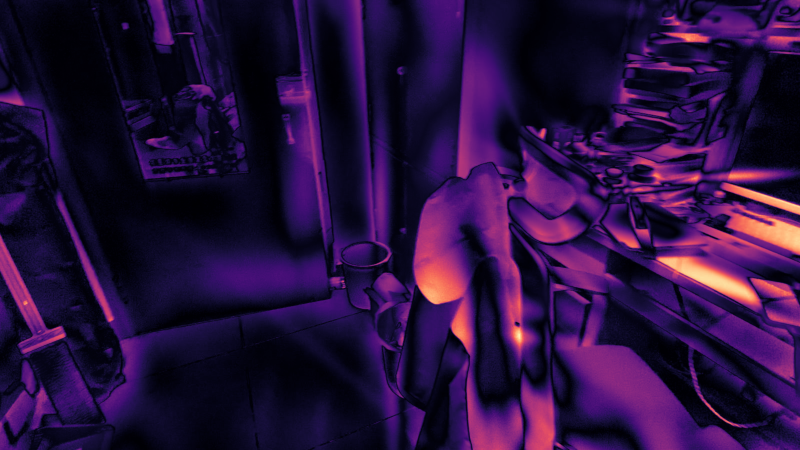
前段（000030）
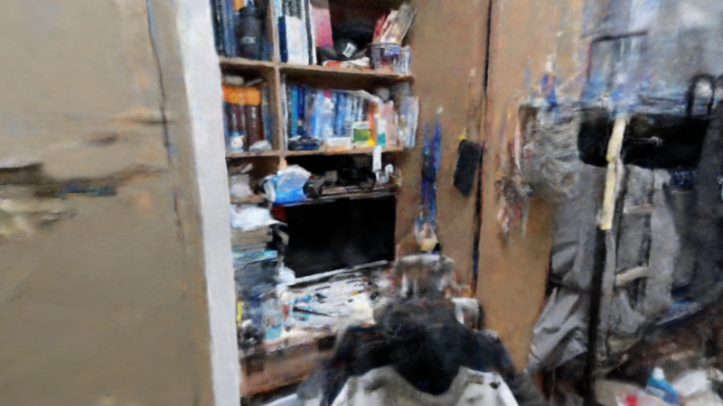
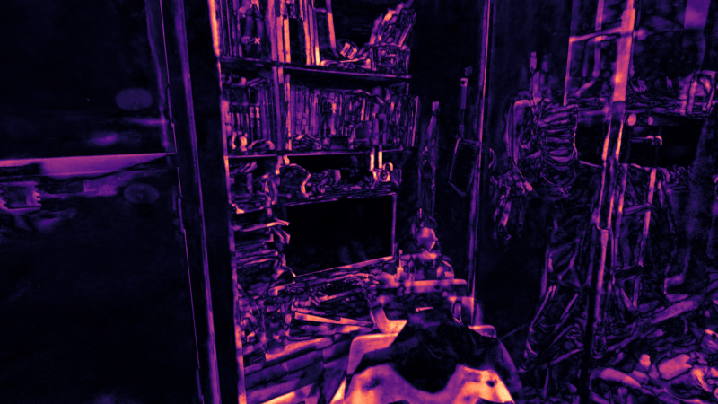
后段（001210）
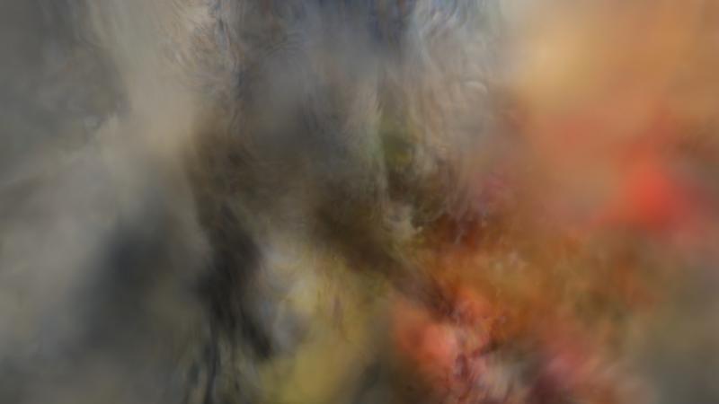
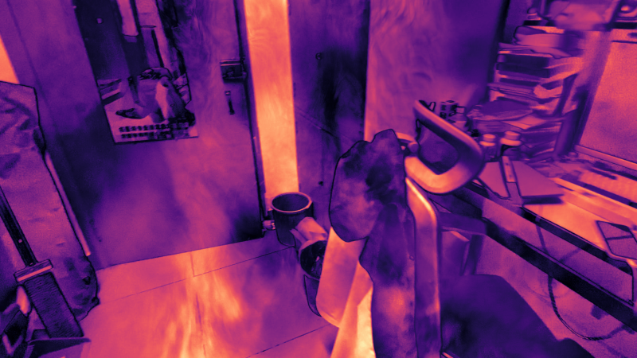
fps4 与 fps2 相比，3DGS 在 fps4 略优，而 NeRF 在 fps4 反而比 fps2 差（18.47 vs 20.65）。这与“门附近效果不好”的观察吻合：fps4 比 fps2 多保留了门区域的转动帧，对几何敏感度低的 NeRF（用半透明体积“糊”出图像）反而是负担，而对显式高斯的 3DGS 影响较小。效率方面，训练时间随帧数近似线性增长（图 4），fps8 的训练成本最高却换来最差的质量，进一步说明密集抽帧在该场景下是净损失。
以口径最完整的 fps4 为基准，四种方法的完整指标表统一放在 附录 9.4。SfM 不产生 RGB 指标，其点云见 §5.7 交互式查看器。
3DGS 在该场景下全面领先 NeRF（PSNR 高 9 dB 以上）。NeRF 在 fps4 上表现疲软（PSNR 仅 18.47），与门区域的视角相关外观密切相关：镜面反射被视角相关颜色“烘焙”进模型，在新视角下暴露为重影。NeuS 与 NeRF 训练时间相近（约 3260s vs 3016s），但 NeuS 额外承担表面正则与 marching cubes，几何输出更结构化；它的显存占用也最低（7.1 GB）。SfM 的 mapper 用时 942s，仅产出稀疏点云。
在统一 40 000 步预算下，3DGS、NeRF 与 NeuS 均训练约 50 分钟，单步计算成本接近；NeuS 略慢，来自表面正则与 marching cubes 的额外开销。但这一结论仅在”相同步数”下成立：40k 步对 3DGS 和 NeRF 已接近收敛，而对常需 200k 级训练的 NeuS 仍明显不足（见 §5.4）。渲染效率方面，fps2 上 NeuS 的 held-out 渲染仅 0.04 FPS（约 25 秒/帧），明显慢于 NeRF（0.27 FPS）和 3DGS（0.08 FPS）。所有 render_fps 均含磁盘 I/O，不代表纯推理速度（见 附录 9.4 脚注）。
定性上，下图给出 fps4 下 held-out 视角的 GT / 3DGS / NeRF / NeuS 渲染与误差图。SfM 仅产生稀疏点云，见 §5.7 交互式查看器。3DGS 渲染锐利、误差图整体偏暗；NeRF 在门与镜面附近误差明显偏高（误差图中的亮区）；NeuS 在新视角下主体结构清晰但纹理偏弱。
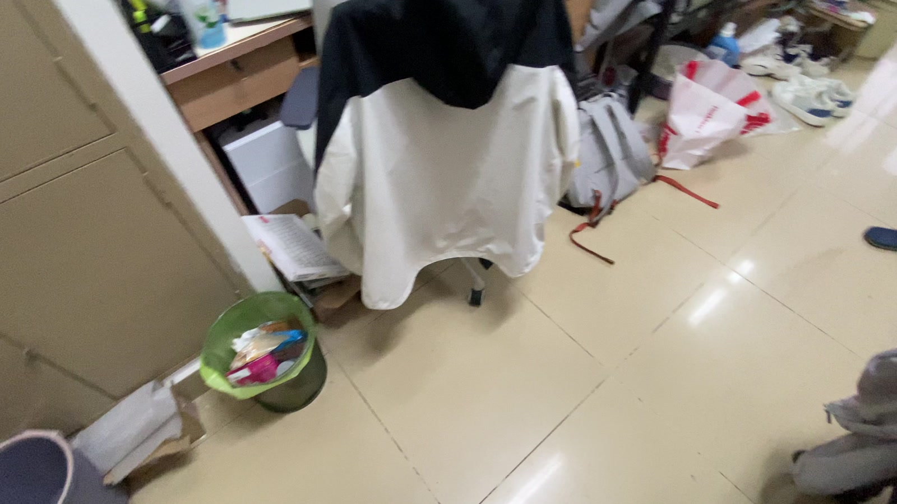
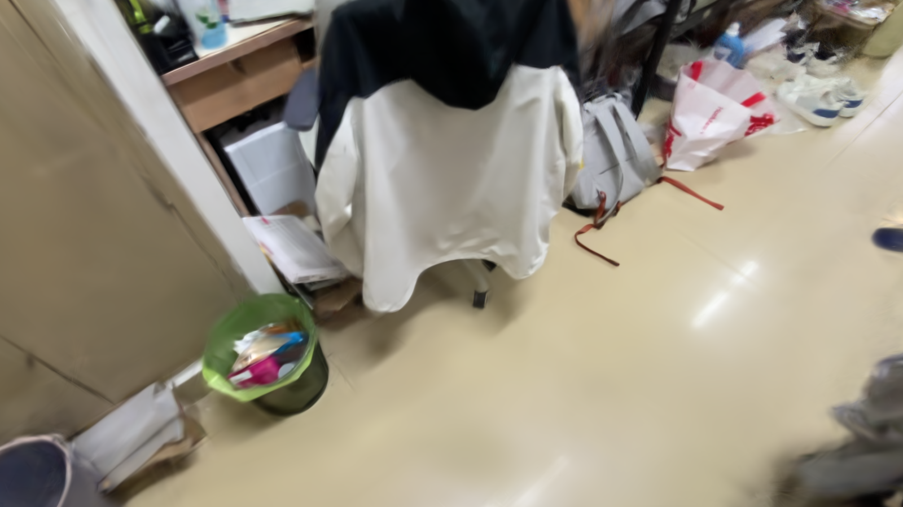
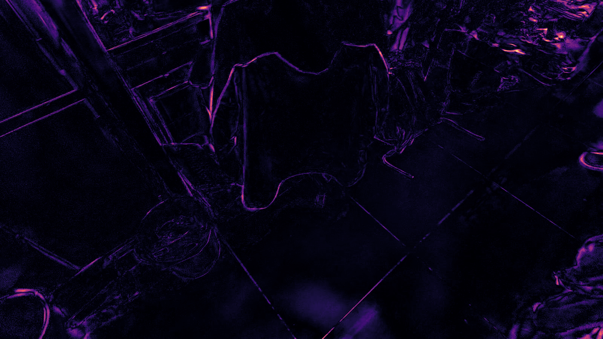
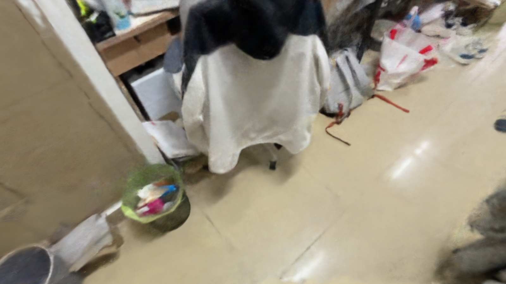
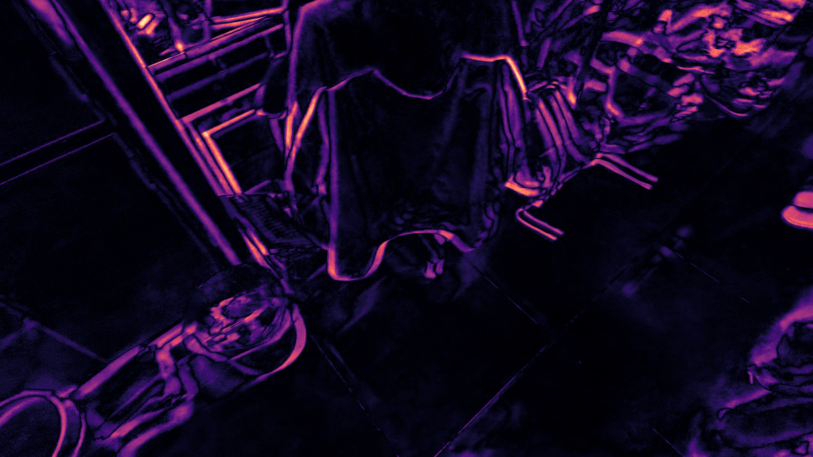
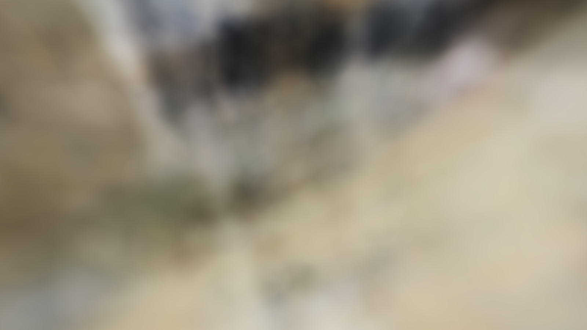
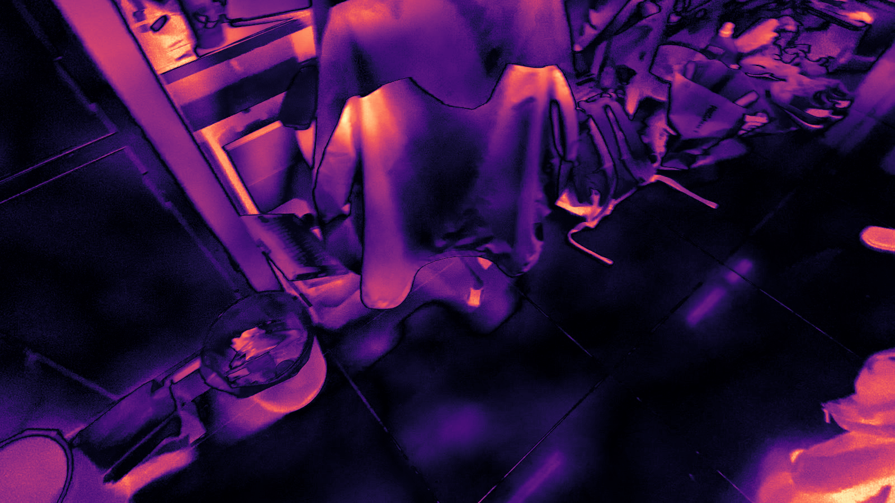
下方视频使用同一条 Catmull-Rom + SLERP 插值生成的相机轨迹离线渲染（非真实拍摄路径），展示 3DGS 在连续新视角下的稳定性。NeRF 的相机轨迹视频因渲染失败暂未提供。
更多 held-out 视角的渲染与差距图见 report_assets/methods/（每个 fps 各 3 个视角）；几何对比例见 交互式点云。
三种神经表示是否稳定收敛、在何处饱和，可由训练曲线直接判断。下图取自 fps4 正式运行的逐 step 日志（logs/*_train_loss_curve.csv）。3DGS 的日志逐 step 记录了 train L1 loss；NeRF 与 NeuS 的日志只记录损失，故以对数纵轴展示其 train/eval 损失。三条曲线均单调下降并在训练末段趋于平缓，未出现发散或回升，说明在 fps4 的数据规模下各方法的优化过程稳定。3DGS 的 held-out PSNR 在约 30000 步后基本饱和，NeuS 的损失在约 20000 步后下降变缓，两者均表明继续训练的边际收益已很有限（见 §5.4）。
logs/*_train_loss_curve.csv，降采样后嵌入本页实时绘制。本节考察同一方法在不同训练步数下的表现，用以判断收敛拐点与继续训练的边际收益。由于 NeRF 在正式运行中只保留最终 checkpoint（未设 save_iterations），下文主要讨论 3DGS 与 NeuS。
3DGS 在 fps4 保存了 7000、30000、40000 步的高斯点云，且训练日志逐 step 记录了 held-out PSNR，因此迭代效果可直接从曲线量化，无需重新渲染；对应的数值表见 附录 9.5。
PSNR 由 7000 步的 24.09 dB 上升至 30000 步的 27.53 dB，此后增长基本停滞（最终渲染评测为 27.70 dB）。3DGS 在该场景下约 30k 步已接近收敛，继续训练到 40k 步的边际收益很小。迭代对比以图 7 的收敛曲线与附录 9.5 的数值表为主要证据。
NeuS 保存了 2000/5000/10000/20000/40000 步的 checkpoint，但当前只在训练末导出了一份 mesh，且 fps4 未取得 held-out RGB 指标，无法像 3DGS 那样给出逐步 PSNR 或逐步定性图。现有结论来自图 7：NeuS 的 train/eval 损失在约 20k 步后已趋于平缓，说明其在统一 40k 步预算下也接近该预算能达到的稳定区间。
三种神经表示统一在 40 000 步预算下训练，这远低于 NeuS 常见的 200k 级训练规模。fps2 仅取得 13.30 dB PSNR，表明 40k 步对 NeuS 仍明显不足。NeuS 质量偏低首先归因于训练预算不足，其次才是镜面场景难度。
由于没有 RGB-D 或 LiDAR 真值，几何分析仅采用定性观察。下方交互式查看器（§5.7）展示 3DGS 的高斯云、NeuS 的 SDF mesh 顶点、NeRF 的稀疏 proxy，以及 fps8 的 3DGS 退化结果。总体观察是：3DGS 与 NeuS 在窗户和墙面处更连续，镜面衣柜门附近则普遍出现缺失或漂浮结构；NeuS 的 mesh 比 3DGS 高斯更“薄”，更接近单一表面，这体现了 SDF 的几何先验，也暴露了它对反光区更脆弱。
fps4 与 fps8 的 NeuS held-out 渲染因 checkpoint 加载时的维度冲突而无法完成，metrics.csv 记为 render skipped。冲突源于 NeuSFacto 的 appearance-embedding 表：训练时 checkpoint 记录的行数等于训练图数（如 fps4 为 554），而渲染时模型按测试图数（如 fps4 为 61）重建该表，导致 load_state_dict 因尺寸不匹配抛错，strict=False 无法绕过。fps2 通过剥离 checkpoint 中的 appearance-embedding 张量完成渲染，取得该预算下唯一的 RGB 指标：PSNR 13.30 dB、SSIM 0.660、LPIPS 0.634，渲染速度 0.04 FPS（约 25 s/帧），为四种方法中最慢。
下方查看器把 3DGS 高斯、NeuS mesh 顶点与 NeRF 稀疏 proxy 统一为点云并降采样到约 5 万点，可用鼠标旋转/缩放、用下拉切换。需要联网加载 three.js（CDN）；若离线则显示提示。点云数据以二进制（float32 xyz + uint8 rgb）存放于 report_assets/pointcloud/，由 scripts/lab3/build_report_assets.py 从各 .ply 降采样生成。
提示：3DGS(fps8) 与 3DGS(fps4) 对比可看到 fps8 因位姿漂移产生的漂浮/拉丝高斯；NeuS mesh 顶点呈现更薄的壳状表面；镜面门区域在各表示中都有缺失。
§5 中各方法的差距并非偶然，而是由表示本身决定的。NeRF 优化的是图像一致性而不是薄表面，因此容易把镜面反射吸收到视角相关颜色里，训练视角尚可，新视角便暴露为重影；NeuS 用 SDF 的零等值面定义表面，几何更干净，但对位姿误差、反光与透明区域更敏感；3DGS 介于两者之间，以显式高斯换取快速渲染和较锐利的新视角，同时保留了比 NeRF 更直观的几何载体。这些差异是表示结构带来的，而不是单纯的“实现好坏”。
把它们放在统一维度上看，取舍也很清楚：3DGS 渲染最快、视觉质量最好，但模型最大（约 1.3 GB），且高斯并不等同于真实表面；NeuS 的几何最接近单一表面，却最慢、最脆弱；NeRF 模型最小（约 168 MB），但紧凑的 MLP 表示意味着每次渲染需沿光线逐采样点查询网络，优化难度高、训练收敛慢，且在本场景镜面门区域的视角相关外观面前尤其吃力。fps8 的失败则进一步说明，当位姿与观测本身不稳定时，3DGS 会出现漂浮高斯，NeRF 会把误差”糊”进辐射场，NeuS 因训练不足与反光区挑战而质量偏低（仅在 fps2 取得 13.30 dB PSNR）。
从可微性（Differentiability）角度看，三种方法的梯度链路有本质区别。NeRF 的可微性最强：场景被编码为 neural radiance field，体渲染整条链路从像素 loss 到网络参数全程可微，因此能直接用图像监督端到端优化。NeuS 同样可微，但在 NeRF 基础上多了一层 SDF→opacity 的转换——如何将 SDF 零等值面无偏地映射为体渲染权重，是 NeuS 的核心技术难点。3DGS 也具备可微渲染能力，Gaussian 的位置、协方差、opacity 和 SH 系数可通过 differentiable rasterization 做梯度优化；但其 densification、pruning、splitting 等操作本质上是启发式离散决策，”可微优化 + 显式 primitive 管理”的混合系统不如 NeRF 的纯连续场那样梯度一致。
从机器学习集成（ML Integration）角度看，NeRF 和 NeuS 作为 neural field 天然适合与深度学习结合——可接入各种网络结构、位置编码、hash encoding、latent code 和生成模型。NeuS 比 NeRF 更偏向几何学习，更适合深度/法向/语义等先验注入。3DGS 的 ML 集成则稍复杂：它由数量可变、结构不规则的 Gaussian primitive 构成，并非规则 grid 或简单 MLP，若要接入 transformer、大模型或机器人 memory 系统，需要额外设计 tokenization 或数据结构层。
若目标是 AR/VR 浏览、数字孪生展示或机器人可视化这类以“可交互查看”为先的应用，本报告更倾向于选择 3DGS。它在本场景中同时给出了最高的新视角合成质量、最直观的几何载体与最有实用价值的渲染效率；代价是模型显著更大，而且高斯几何只是表面近似，而非严格 mesh。
若任务转向可编辑 mesh、物理仿真或度量几何，NeuS 的方向仍更有潜力，但前提是补齐更长训练预算（当前仅在 fps2 取得 13.30 dB PSNR）。纵观寝室与博雅塔两组场景，最大的改进方向始终在数据端：高质量、低模糊的输入与均匀的视角覆盖，远比单纯提高帧数或调参更有效。具体而言，录制时避开镜面门的快速转动、对反光区做 mask，均能直接提升位姿稳定性与重建质量。
为验证管线在"非视频抽帧、直接输入照片集"场景下的表现，另采集了北京大学博雅塔两组照片。博雅塔为室外大型建筑，与寝室的室内小场景形成互补。两组数据均通过 Xiaomi 13 手机拍摄，使用同一 SfM 前端：ALIKED-n16 特征提取 + ALIKED+LightGlue 匹配器 + sequential pairing，对应配置见 configs/lab3/boya_close.json 与 configs/lab3/boya_far.json。两组均运行 3DGS，因其在前述寝室实验中为最稳定的表示。
13 张照片，12/1 train-test 划分。3DGS PSNR 14.52、SSIM 0.475、LPIPS 0.376。近景视角覆盖不足，主体轮廓可辨但纹理松散。
40 张照片，40/4 train-test 划分。沿湖边同一位置拍摄 3 个角度，使用 Xiaomi 13 3.2x 长焦镜头。3DGS PSNR 16.19、SSIM 0.605、LPIPS 0.445，重建质量明显优于 close。
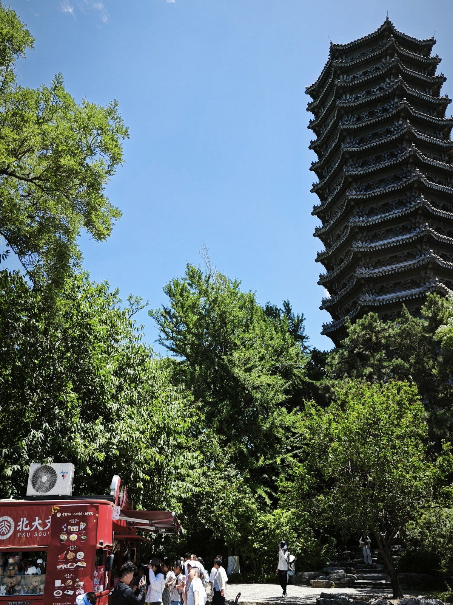
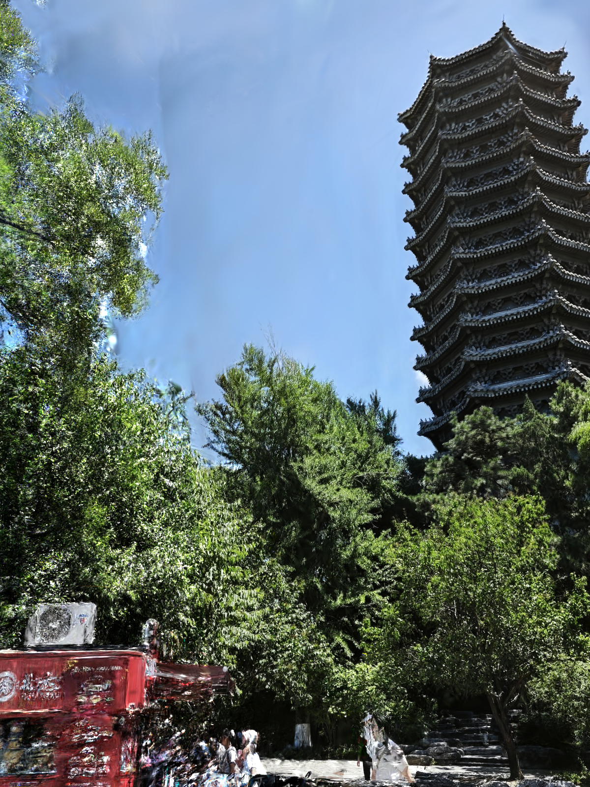
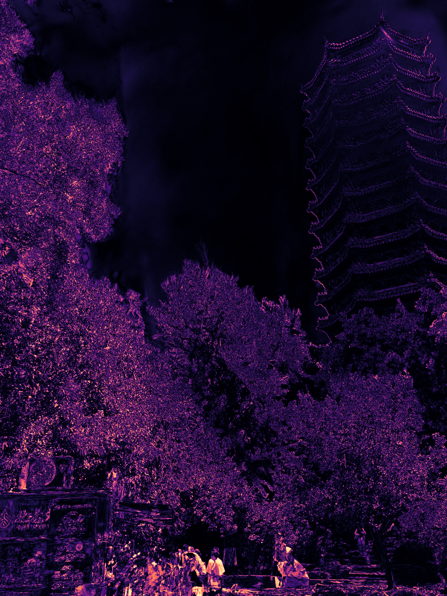
boya_close 的 held-out 视角。3DGS 可恢复博雅塔主体轮廓，但近景 13 张图不足以稳定支撑重建。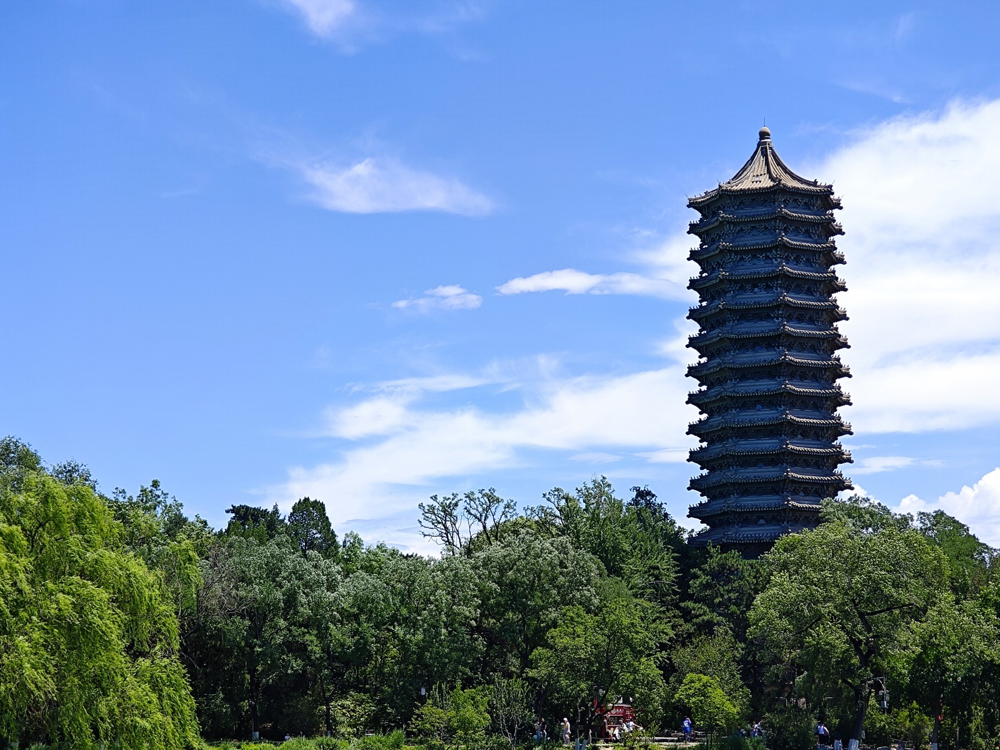
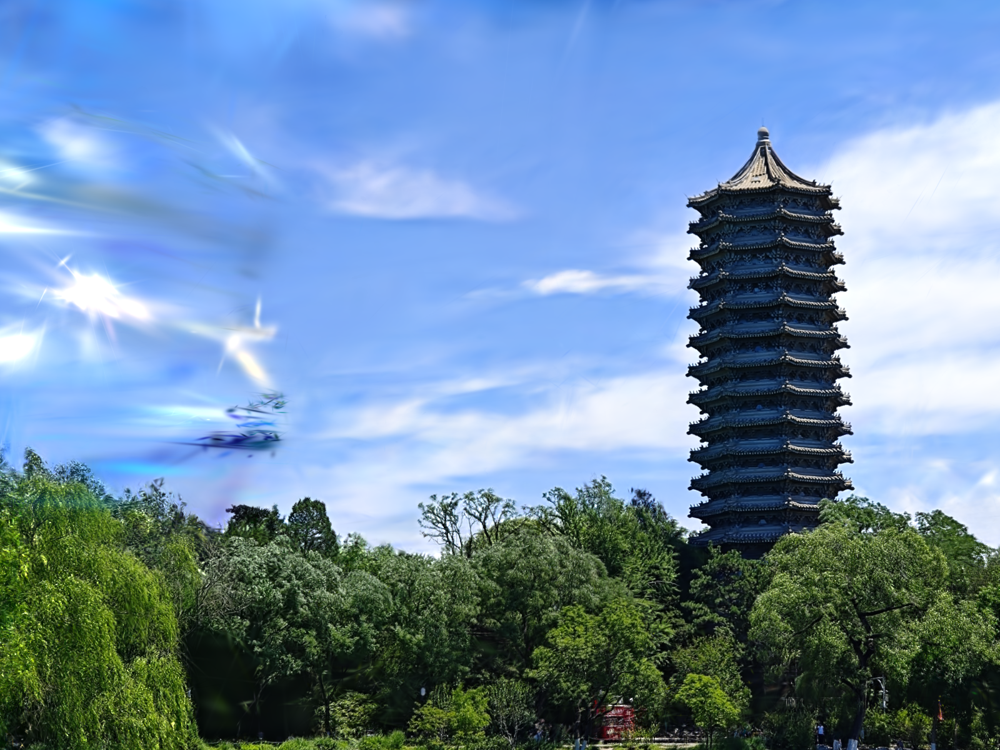
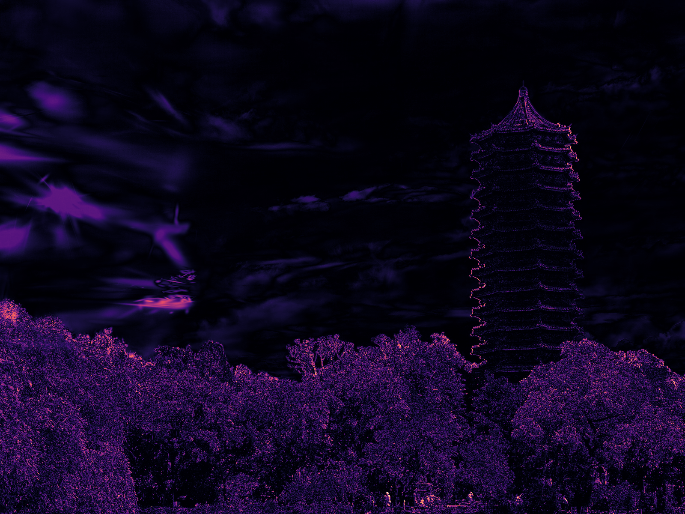
boya_far 的 held-out 视角。远景长焦在同一位置 3 个角度采集后，重建明显稳定于 close。下方视频使用插值生成的相机轨迹离线渲染（非真实拍摄路径），展示博雅塔远景长焦在连续视角下的几何与纹理稳定性。
博雅塔的结果与寝室场景的主结论一致：3DGS 在组织良好的照片集上表现稳定，且视角覆盖的充分性——而非单纯的照片数量——是决定重建质量的关键因素。far 组虽仅 40 张图、但 3 个角度覆盖更均匀，其 PSNR 比 close 组高 1.67 dB；close 组 13 张近景的视角变化有限，导致纹理模糊与几何松散。